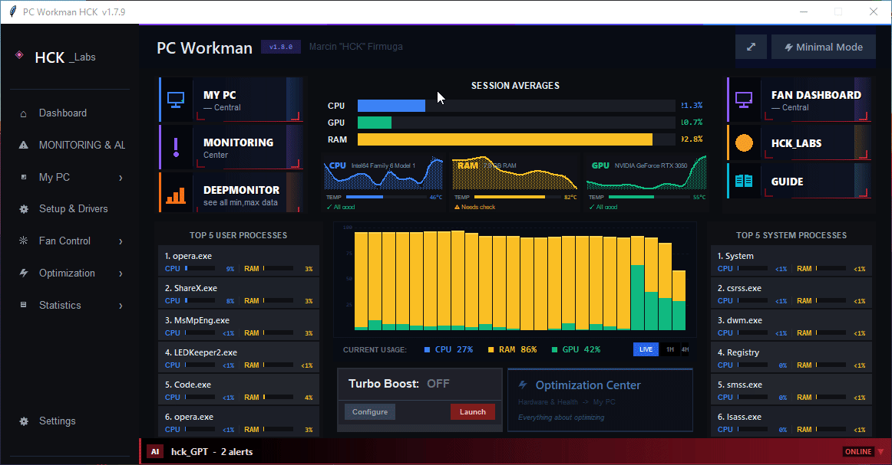
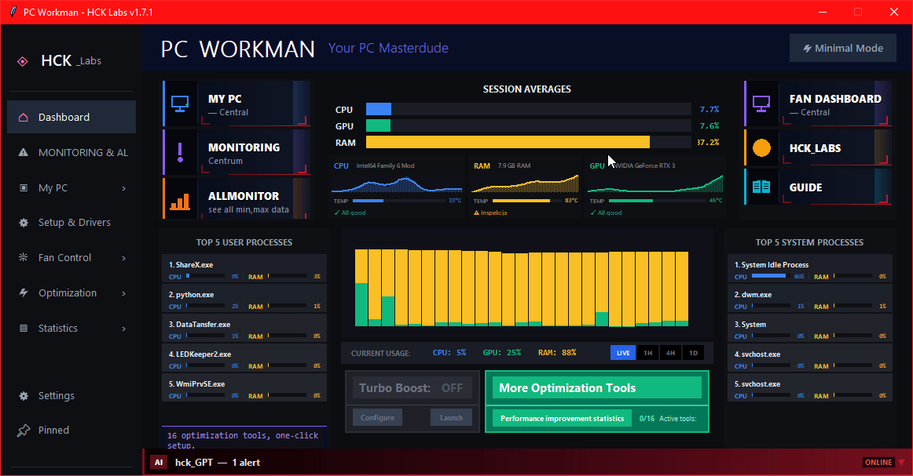
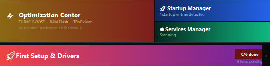
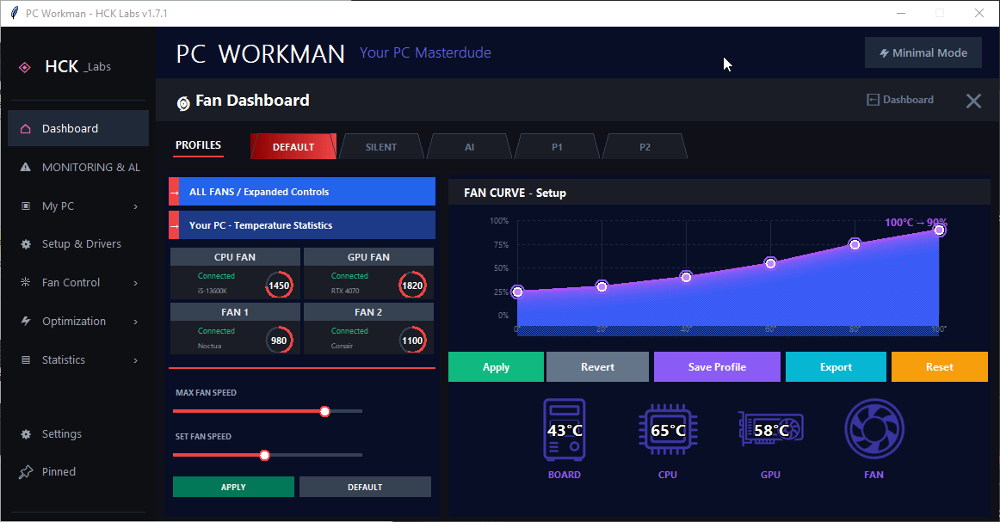
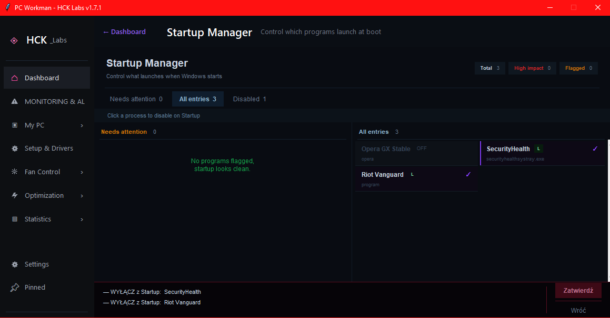
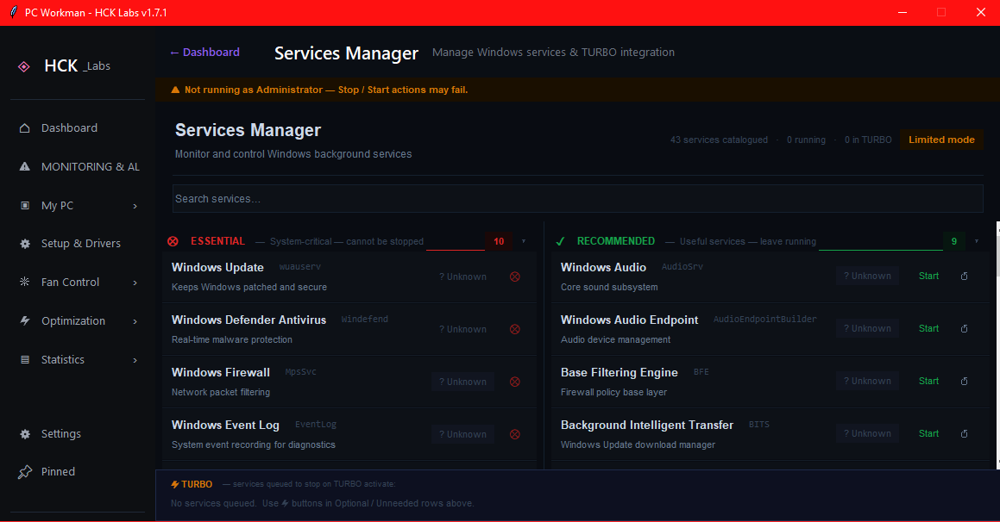
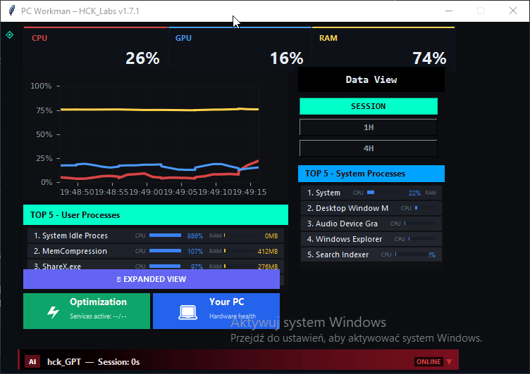

Technical
TURBO Mode: stopping 21 Windows services without crashes
3 separate managers, 33-service whitelist, crash recovery via turbo_state.json. Encoding fix for Polish OEM Windows.
See repo on GitHub ->5 modules. hck_GPT with 9-layer logic and 100 intents. TURBO mode one toggle. Stats & Alerts that learns your specific PC for 6–12 months.


Architecture
Each does one thing well. Together they form something HWMonitor and Afterburner will never combine.


Coming back — after thorough stability testing.
Inside My PC
Not dashboards for aesthetics — each one has a concrete action to perform.

Full list of processes starting with the system. See the boot impact of each entry, disable unnecessary ones with one click. No need to dig through msconfig or regedit. End of "Windows takes 3 minutes to start because Spotify decided it was important".

Manual service management + three ready-made modes in Optimization Center: each stops a different set of non-essential services. Whitelist protects critical processes — no crashes. Revert with one click, state saved to JSON.
Built-in assistant
Not an LLM API. Own local decision logic — fast, offline, specific.
Quick aliases in both languages — type "temp", "voltage", "gaming", "weekly", "fans" and you know immediately what's going on. No waiting.

100 intents — recognizes queries in Polish and English
Real conversation — data from your hardware, not the internet
Long-term learning
Every PC is different. An RTX 4070 in one build runs at 78°C, in another at 84°C — and both are normal. Stats & Alerts collects data for 6–12 months and learns what your norm looks like.
After that it only alerts on things that actually need attention: unnatural voltage spikes (much more frequent than before), systematic temperature increases (= thermal paste replacement needed), anomalies deviating from the learned norm. Zero false alarms.
Steady +3–5°C over several weeks = signal to replace thermal paste. Detected before CPU starts throttling.
If 12V spikes 3x more often than previous months — alert. PSU might be starting to fail.
Program learns when and how your CPU typically draws power. Anomalies visible immediately.
Compact mode

Compact display mode — smaller window, key metrics on top. Originally considered the main look of PC_Workman, it stepped aside for the full expanded view with 5 modules and a richer UI.
Minimalistic View Mode has been on hold for a while — not actively developed. The last major change was a redesign for the new hck_GPT assistant and a new banner. It'll come back at version 1.8.0+, when PC_Workman gets Polish language support — minimalistic mode will be updated alongside everything else at that point. For now it works, but it's not the priority.
Comparison
MSI Afterburner, HWMonitor, GPU Tweak, GeForce Experience, HWInfo
| Feature | MSI AB | HWMonitor | GPU Tweak | GFE | HWInfo | PC_Workman |
|---|---|---|---|---|---|---|
| AI assistant (local) | ❌ | ❌ | ❌ | ❌ | ❌ | ✅ hck_GPT, 100 intents |
| Learns your PC's norms | ❌ | ❌ | ❌ | ❌ | ❌ | ✅ 6–12 mo. Stats & Alerts |
| TURBO mode (4 functions toggle) | ❌ | ❌ | ❌ | ❌ | ❌ | ✅ RAM + Plan + Services + Guard |
| Explains spike causes | ❌ | ❌ | ❌ | ❌ | ❌ | ✅ with AI context |
| Fan curve control | ✅ | ❌ | ✅ | ❌ | ❌ | ✅ Fan Dashboard |
| Weekly Report / history | ❌ | ❌ | ❌ | ❌ | Partial | ✅ charts, insight cards |
| Suspicious process detection | ❌ | ❌ | ❌ | ❌ | ❌ | ✅ automatic |
| One-click optimization + revert | ❌ | ❌ | Limited | Limited | ❌ | ✅ full undo |
| Requires login | ❌ | ❌ | ❌ | ✅ 😒 | ❌ | ❌ privacy |
| Open Source | ❌ | ❌ | ❌ | ❌ | ❌ | ✅ GitHub MIT |
The only alternative with local AI that learns your PC
Check it on GitHubBuild in Public
Authentic story — no startup glamour
December 22nd I lost my job in the Netherlands. Came back to Poland with one thing — determination to build something of my own. PC_Workman is being built on a 2014 laptop that regularly hits 90°C+. Not waiting for perfect hardware — building now.
No VC money, no team. Solo grind, late-night refactoring sessions, and every line of code solving my real problem. 6+ months, from zero to 5 modules, hck_GPT with 100 intents and TURBO mode.
"Constraint breeds creativity. The old laptop taught me to optimize every feature. That's the same experience PC_Workman gives its users."
Stay in the loop! Early access and updates straight to your inbox.
Insights from the development journey
3 separate managers, 33-service whitelist, crash recovery via turbo_state.json. Encoding fix for Polish OEM Windows.
See repo on GitHub ->Indie developer reality check. Road through late-night coding, refactoring and 100 intents written by hand.
See on LinkedIn ->Local engine vs cloud LLM. Latency, privacy, control over responses. Concrete numbers.
Thread on X ->6–12 months of data, learning natural norms. Why false alarms are worse than no alerts.
Read the story ->Questions worth asking before you download
hck_GPT is a local engine — zero cloud. Every query goes through 9 layers: intent recognition (100 patterns EN+PL), context classification, live hardware query from AllMonitor, session history check, Stats & Alerts lookup (your learned norms), CPU/GPU knowledge base profile match (TDP, Tj_Max, hotspot), response generation with actual numbers, action suggestion if something needs attention, format and deliver. Result: answer specific to your hardware, not generic text.
TURBO mode activates with one toggle: Auto RAM Flush (automatically frees memory at >75% usage), Turbo Power Plan (creates a custom "Turbo PC" plan based on Ultimate Performance, switches automatically in fullscreen), Turbo Service Stop (stops up to 21 non-essential Windows services — with a 33-service protected whitelist), Process Guard (suspends idle processes below 0.8% CPU for 30s, auto-resume after 30min). 16 functions planned — these 4 are live and stable right now.
6–12 months is the optimal time to learn the natural temperatures and voltages of your PC across different scenarios (summer/winter, gaming/idle, various loads). During this time the program collects data in the background via AllMonitor with no performance impact. After that, alerts only appear for real anomalies — unnatural temperature increases or voltage spikes deviating from the learned norm. No false alarms like "95°C is high" if your CPU normally runs at 89–95°C under load.
MSI Afterburner is great for GPU OC and OSD — shows raw data. PC_Workman explains what that data means in the context of your specific PC. There's no single "killer feature" here — it's a different tool with a different goal. AB: overclocking and monitoring. PC_Workman: an assistant that learns your hardware, optimizes the system and answers hardware questions locally.
Yes. PC_Workman was built on an i7-4710HQ from 2014, 8GB RAM, regular 90°C+. Background monitoring has a minimal footprint, hck_GPT doesn't query any external API. If it runs on this old machine, it'll run on yours.
For basic monitoring (CPU/RAM/GPU usage, temps) — no. For TURBO mode (stopping services, changing power plans, suspending processes) — yes, those are system operations. The program only asks for privileges when needed. Full source code on GitHub — you can verify every line.
Planned for v1.8.0+. Along with that, Minimalistic View Mode (which has been on hold for a while) will be updated, and probably a few UI things too. Subscribe to the newsletter to get notified first.